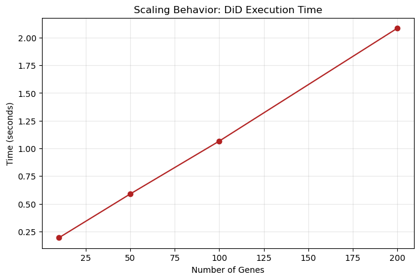
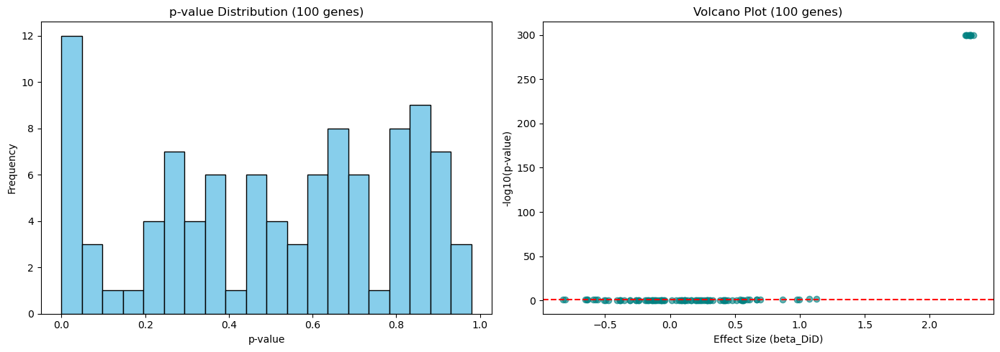

[1]:
import warnings
warnings.filterwarnings('ignore')
import pandas as pd
pd.options.mode.chained_assignment = None
sctrial: Stress Test and Scalability Analysis
This notebook demonstrates sctrial’s performance and scalability by running a stress test on a large-scale synthetic dataset (e.g., 20,000 cells and 10,000 genes).
[2]:
import sctrial as st
import numpy as np
import pandas as pd
from anndata import AnnData
from scipy import sparse
import time
import matplotlib.pyplot as plt
1. Dataset Generation
We generate a dataset with 50 participants and 10,000 genes to simulate the scale of a real clinical trial.
[3]:
n_participants = 50
n_cells_per_unit = 200
n_genes = 10000
print(f"Generating stress-test dataset: {n_participants} participants, {n_genes} genes...")
rows = []
for i in range(n_participants):
arm = "Treated" if i < n_participants // 2 else "Control"
for v in ["Baseline", "Followup"]:
for _ in range(n_cells_per_unit):
rows.append({
"participant_id": f"P{i}",
"visit": v,
"arm": arm,
"celltype": "TypeA" if np.random.rand() > 0.5 else "TypeB",
"batch": f"B{i % 5}"
})
obs = pd.DataFrame(rows)
n_obs = len(obs)
# Generate sparse noisy data
data = np.random.poisson(0.1, size=(n_obs, n_genes)).astype(float)
# Inject signal in some genes
data[obs[(obs["arm"]=="Treated") & (obs["visit"]=="Followup")].index, :10] += 2.0
X = sparse.csr_matrix(data)
adata = AnnData(X=X, obs=obs)
adata.var_names = [f"Gene{i}" for i in range(n_genes)]
adata.layers["counts"] = adata.X.copy()
print(adata)
Generating stress-test dataset: 50 participants, 10000 genes...
AnnData object with n_obs × n_vars = 20000 × 10000
obs: 'participant_id', 'visit', 'arm', 'celltype', 'batch'
layers: 'counts'
2. Benchmark: Normalization
We measure the time taken to normalize 20,000 cells x 10,000 genes.
[4]:
design = st.TrialDesign(
participant_col="participant_id",
visit_col="visit",
arm_col="arm",
arm_treated="Treated",
arm_control="Control"
)
print("Normalizing...")
start_norm = time.time()
adata = st.add_log1p_cpm_layer(adata, counts_layer="counts", out_layer="log1p_cpm")
time_norm = time.time() - start_norm
print(f"Done in {time_norm:.2f}s")
Normalizing...
Done in 0.20s
3. Benchmark: Large-Scale DiD Analysis
We run DiD across a range of gene counts to evaluate scaling behavior.
[5]:
gene_counts = [10, 50, 100, 200]
times = []
for gc in gene_counts:
print(f"Running DiD on {gc} genes...")
start = time.time()
_ = st.did_table(
adata,
features=adata.var_names[:gc],
design=design,
visits=("Baseline", "Followup"),
layer="log1p_cpm"
)
times.append(time.time() - start)
plt.figure(figsize=(8, 5))
plt.plot(gene_counts, times, marker='o', linestyle='-', color='firebrick')
plt.title("Scaling Behavior: DiD Execution Time")
plt.xlabel("Number of Genes")
plt.ylabel("Time (seconds)")
plt.grid(True, alpha=0.3)
plt.show()
Running DiD on 10 genes...
Running DiD on 50 genes...
Running DiD on 100 genes...
Running DiD on 200 genes...

4. Benchmark: Stratified DiD Analysis
Testing performance of stratified analysis across cell types.
[6]:
print("Running stratified DiD (10 genes x 2 celltypes)...")
start_strat = time.time()
strat_res = st.did_table_by_celltype(
adata,
features=adata.var_names[:10],
design=design,
visits=("Baseline", "Followup"),
layer="log1p_cpm"
)
time_strat = time.time() - start_strat
print(f"Done in {time_strat:.2f}s")
Running stratified DiD (10 genes x 2 celltypes)...
Done in 0.48s
5. Results Summary
[7]:
res = st.did_table(
adata,
features=adata.var_names[:100],
design=design,
visits=("Baseline", "Followup"),
layer="log1p_cpm"
)
print("\nSummary of Results:")
print(st.summarize_did_results(res))
fig, axes = plt.subplots(1, 2, figsize=(14, 5))
# p-value distribution
axes[0].hist(res["p_DiD"], bins=20, color="skyblue", edgecolor="black")
axes[0].set_title("p-value Distribution (100 genes)")
axes[0].set_xlabel("p-value")
axes[0].set_ylabel("Frequency")
# Volcano plot
res_v = st.plotting.did_volcano_frame(res)
axes[1].scatter(res_v["beta_DiD"], res_v["neglog10p"], alpha=0.6, color="teal")
axes[1].axhline(-np.log10(0.05), color="red", linestyle="--")
axes[1].set_title("Volcano Plot (100 genes)")
axes[1].set_xlabel("Effect Size (beta_DiD)")
axes[1].set_ylabel("-log10(p-value)")
plt.tight_layout()
plt.show()
print(f"\nFinal Performance Metrics:")
print(f"- Normalization (20k cells x 10k genes): {time_norm:.2f}s")
print(f"- Stratified DiD (10 genes x 2 types): {time_strat:.2f}s")
print(f"- Single Gene DiD (avg): {np.mean(times)/gene_counts[-1]:.4f}s")
print("\nStress test passed successfully!")
Summary of Results:
## Trial-Aware DiD Summary
Total features tested: 100
Significant (p < 0.05): 12
Significant (FDR < 0.05): 10
### Top Upregulated Features (by p-value):
- Gene0: beta=2.285, p=0.00e+00
- Gene1: beta=2.300, p=0.00e+00
- Gene2: beta=2.314, p=0.00e+00
### Top Downregulated Features (by p-value):
- Gene67: beta=-0.821, p=6.20e-02
- Gene84: beta=-0.805, p=1.24e-01
- Gene35: beta=-0.634, p=2.03e-01

Final Performance Metrics:
- Normalization (20k cells x 10k genes): 0.20s
- Stratified DiD (10 genes x 2 types): 0.48s
- Single Gene DiD (avg): 0.0049s
Stress test passed successfully!